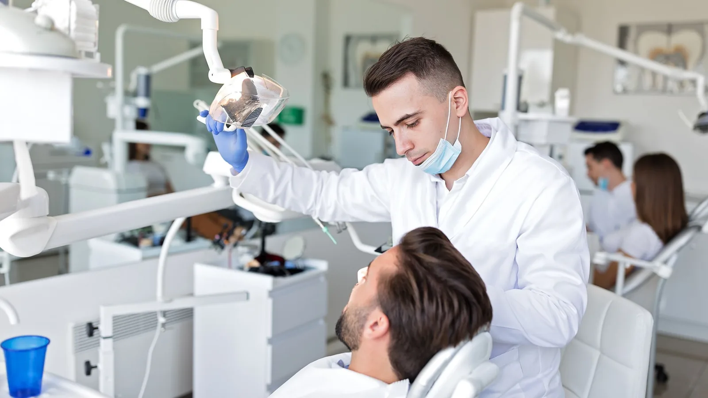

Our services
The everyday care that keeps problems small.
Most of dentistry is not dramatic. It is turning up regularly, catching things early, and dealing with a small problem while it is still small. That is what general and preventive care is for, and it is the bulk of what we do.
A routine visit at Lava Street Dental means a proper examination — teeth, gums, bite, and a check of the soft tissues — followed by a clean and an honest conversation about what, if anything, needs attention. If everything is fine, we will tell you that. If something needs watching rather than treating, we will say that too.

Our cleans
We clean using an air-polishing system that combines warm water, compressed air and a very fine powder. For most people it is more comfortable than the traditional scrape, particularly if you get cold sensitivity, and it lifts surface staining well. Where heavier deposits need removing, ultrasonic scaling is used as well.
Looking after children
Children are welcome from their first teeth. Early appointments are short and low-key, largely about getting comfortable with the chair and the people in the room. Eligible children may be able to access care through the Child Dental Benefits Schedule — ask us and we will check.
When something goes wrong
Toothache, a broken tooth, a lost filling or a knock to the mouth. We keep room for urgent problems and will get you seen as soon as we reasonably can.
What sits under general and preventive care
Dental Check-ups & Cleans
— examination, air-polishing clean, X-rays where clinically indicated
Dental Fillings
— tooth-coloured composite restorations
Children’s Dentistry
— check-ups, cleans, fissure sealants and preventive advice
Gum Disease Treatment
— assessment and treatment of gingivitis and periodontitis
Custom Mouthguards
— professionally fitted guards for sport
Night Guards & Teeth Grinding
— splints for clenching and grinding
Emergency Dental Care
— same-day help for pain, breakage and dental trauma
Common questions
Six months suits most adults, but it depends on your gum health, decay risk and history. Some people are better off at three or four months, others can stretch to twelve. Dr Meg will recommend an interval that fits your situation rather than a blanket rule.
No. X-rays are taken when there is a clinical reason — checking between teeth, assessing a root, planning treatment — and the interval depends on your risk of decay. We will explain why before taking any.
With a look, a conversation and a plan. Anything painful gets dealt with first, then we work through the rest in an order that makes sense for you and your budget.
Yes, from children with their first teeth through to older patients with more involved needs.
Dr Meg carries out examinations and cleans herself. It means the person doing the clean is the person who knows what your gums looked like last time.
Brushing twice daily with fluoride toothpaste, cleaning between the teeth, and — the one most people underestimate — reducing how often you have sugar rather than how much. Frequency matters more than quantity.